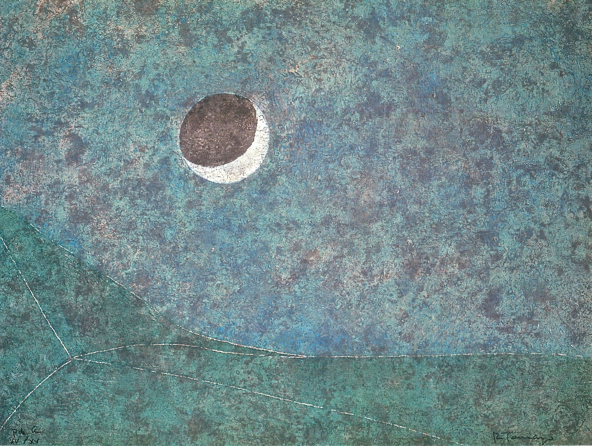

Трактовать затмения в личных целях – легко! Вы можете сами определять важнейшие потенциальные проблемы и ставить задачи по их предупреждению. Надо всего лишь… запомнить ключевые характеристики осей зодиака. А теперь по порядку)
Каждое затмение имеет 2 стороны – уникальную и типичную. Уникальную («В этот раз затмение совпадает с ретроградным Меркурием и соединением Марса с Сатурном, поэтому…») оставьте специалистам. Особенности и учитывающие их детальные прогнозы – это полезно и круто, но за деталями легко потерять суть и в итоге не позаботиться о главном. О главном рассказывает типичная сторона затмения – характеристики знака зодиака, в котором оно происходит.
Плавно переходим от знаков к осям.
Затмения приходят не поодиночке, а двойками или тройками с промежутком примерно в две недели, причем – в противоположных знаках, дополняющих друг друга подобно половинкам инь-ян: если произошло солнечное затмение во Льве, значит 14 дней спустя будет лунное затмение в Водолее.
О противоположных знаках говорят, что они лежат на одной оси (поэтому говорят, что затмения происходят на оси такой-то). Всего осей 6: Овен – Весы, Телец – Скорпион и т. д.

У каждой оси, каждого «ин-янь», есть несколько основных идей. Знаки оси показывают их с разных сторон. Например, есть ось, чьи идеи в основном связаны с ресурсами – это ось Телец – Скорпион. (Кстати, именно она будет задействована при ближайшем затмении – 4.12.2021.) Телец, если коротко, символизирует личные, явные ресурсы, а Скорпион – ресурсы партнеров или совместные ресурсы, ресурсы чужие и скрытые.
Идеи оси, на которой происходят затмения, требуют внимания, т. к. затмения маркируют потенциальные кризисы – переходные состояния, вскрывающие, что привычный образ жизни, поведения теряет эффективность или что жить по-старому вообще больше не получится.
Скажем, затмения на вышеупомянутой оси Телец – Скорпион (оси ресурсов и еще удовольствий) предупреждают о том, что модель взаимодействия с ресурсами и удовольствиями пора пересмотреть, улучшить. Проверочные вопросы в этом случае примерно такие: устраивает ли меня мой доход / сексуальная жизнь с партнером? Разумно ли организованы траты / вложения средств? Как у меня / у нас с партнером с финансовой грамотностью? Вопросы для остальных осей легко составить по аналогии. (Предстоит затмение на оси Лев – Водолей = стоит оценить, насколько эффективно мои уникальные продукты, идеи и пр. представлены в обществе? не пора ли выходить на новый уровень общественного служения, отдачи миру своих талантов? (с сопутствующим ростом ответственности, да, но и доходов, прибыли).)
Затмения побуждают нас быть проактивными и осознанными! А еще целостными, так как приучают находить баланс в разных сферах жизни.
Вишенка на торте. Затмения «привязаны» к Раху и Кету: как правило, они происходят в знаках той же оси, на которой лунные узлы располагаются в данной момент. Движение Раху – Кету циклично и предсказуемо, оно просчитывается компьютерными программами, так что уже сейчас мы имеем доступ к расписанию вызовов Вселенной на годы вперед! Мы уже знаем, за что с нас спросят. Да, внешние условия могут сильно меняться, могут возникать новые возможности или проблемы, но если вы системно работаете над какой-то осью, ее сферами, то будете лучше готовы к переменам, сможете быстрее адаптироваться.
Краткие характеристики осей.
Базовые характеристики знака во многом определяются планетой, которая им управляет. Я указала управителей знаков в скобках, чтобы вам было проще строить свои цепочки рассуждений.
Овен – Весы (Марс – Венера). Ось отношений.
Полюса оси:
- я – партнер (по браку, бизнесу и т. д.);
- я – другой/другие;
- мое физическое тело – тело другого;
- мои границы – границы другого;
- мои действия, инициативы – действия другого или наши совместные действия, компромиссы.
Телец – Скорпион (Венера – Марс). Ось ресурсов, или Ось отношений через призму ресурсов и удовольствий.
- Полюса оси:
- мои ресурсы (время, деньги, знания и пр.) – ресурсы партнера или наши совместные ресурсы;
- мои ценности – ценности партнера;
- моя самооценка – самооценка партнера;
- мои вкусы, понятия об удовольствии – вкусы и представления об удовольствии партнера;
- явные ресурсы – скрытые ресурсы.
Близнецы – Стрелец (Меркурий – Юпитер). Ось знаний, перемещений и коммуникации.
Полюса оси:
- практические навыки, информация, факты – система знания, мудрость, абстрактное знание, философия, теория, этика, закон, мировоззрение, религия;
- распространение, популяризация знания, информации – само знание, создание системы знания;
- братья/сестры, соседи, люди моего же уровня – учителя, Гуру, люди в авторитетной (по отношению ко мне) позиции;
- коммуникация по горизонтали – коммуникация по вертикали;
- короткие поездки – длительные поездки или поездки на далекие расстояние,
- заграничные путешествия, паломничества.
Рак – Козерог (Луна – Сатурн). Социальная ось.
Полюса оси:
- дом – социум;
- интимное, личное, внутреннее пространство, чувства и эмоции – открытое, общественное пространство, правила поведения;
- комфорт, защищенность – отсутствие гарантированной безопасности;
- отдых, досуг – карьера.
Лев – Водолей (Солнце – Сатурн). Ось творчества.
Полюса оси:
- яркое проявление индивидуальности, уникальность – коллективизм, массовые решения;
- личное творчество (принесение в мир чего-то нового), изобретения, дети – коллективное творчество, передовые наукоемкие технологии (подразумевающие согласованные усилия многих людей и/или необходимость промышленного оборудования и пр.), жизнь/продвижение личного творчества в социуме, соцсети, общественное признание;
- центр – периферия, система в целом и связи в ней.
Дева – Рыбы (Меркурий – Юпитер). Ось служения.
Полюса оси:
- детали, анализ, конкретика – общий план, синтез, символы;
- рутинная, нудная работа, ремесло, проза жизни, земная правда – воображение, фантазия, уход от реальности, изоляция от мира, благотворительность, филантропия, йога, уединенная духовная практика, вечные ценности, мокша;
- исцеление на физическом уровне – исцеление на духовном уровне, холистическая медицина;
- локальное решение проблем – решение проблем на самом общем (в частности, теоретическом, мировоззренческом) / мировом уровне.
Расписание вызовов Вселенной на ближайшие 10 лет.

На самой 1-й иллюстрации – картина «Затмение» (1980 г.) Руфино Тамайо, мексиканского художника-модерниста.

- Омкарнатх
- (Осинская Ольга)
- +7 (926) 050 0785
- omkarnath@9planets.ru
- 9planets@mail.ru
Записаться
Cтатьи
-

«Кали» Рукмини Бхаи Наир
В 1990 году это стихотворение получило первую премию на Втором Всеиндийском поэтическом конкурсе и рассматривается критиками как жемчужина современной индийской поэзии.
-

Лайфхак для затмений: 6 осей зодиака
Трактовать затмения в личных целях – легко! Вы можете сами определять важнейшие потенциальные проблемы и ставить задачи по их предупреждению. Надо всего лишь… запомнить ключевые характеристики осей зодиака. А теперь по порядку)
Приложения